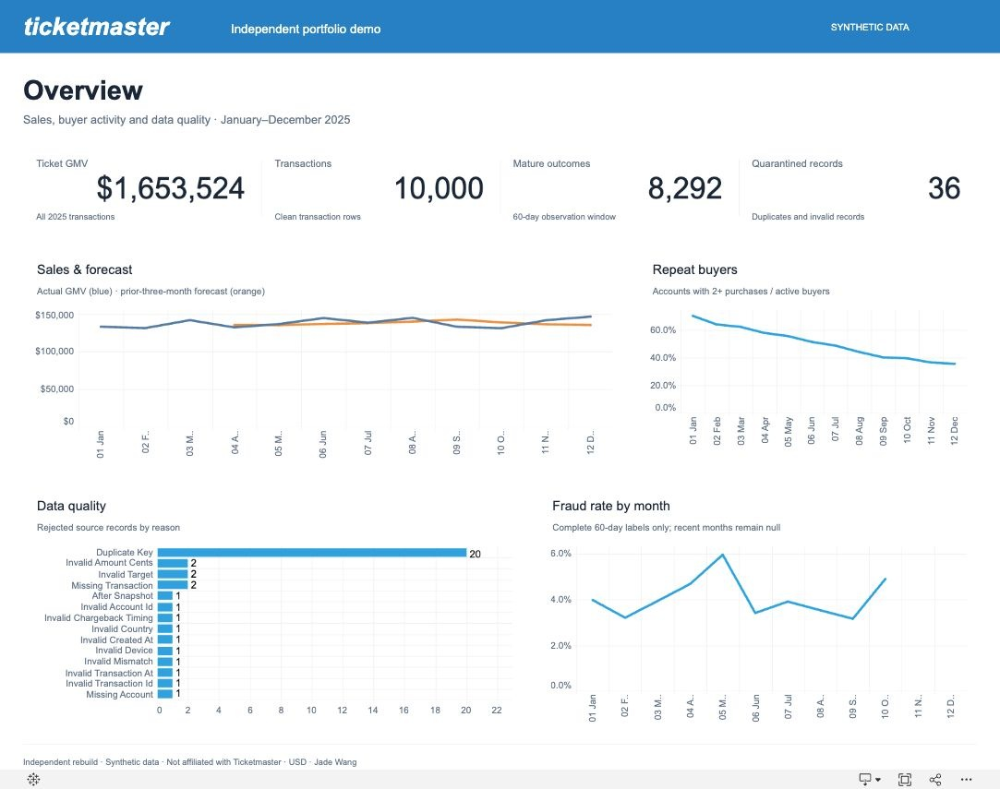

Clean & validate
Normalize types and timestamps, deduplicate business keys, validate relationships and isolate invalid records with explicit reasons.
A complete transaction-risk workflow: clean raw records in SQL, prepare data with pandas, train a gradient-boosting classifier in Python, and monitor the results in Tableau.
This personal reconstruction uses independently generated data. It contains no company or customer records and is not affiliated with Ticketmaster. It does not reproduce or verify an employer’s original business results.
Published on Tableau Public. On smaller screens, scroll the view horizontally or open the full Tableau page. Use Scenario & ROI to change prevention and cost assumptions.
Normalize types and timestamps, deduplicate business keys, validate relationships and isolate invalid records with explicit reasons.
Merge labels at transaction grain, preserve unknown outcomes, mark chronological cohorts and reconcile monthly totals with SQL.
Build a gradient-boosting classifier. Select review thresholds on validation data and evaluate once on the held-out October cohort.
Use native Hyper extracts, calculated fields and scenario parameters to inspect fraud, sales, review capacity and hypothetical ROI.
October test set: 818 transactions, including 40 positive labels.
This learning baseline misses most positives. Its modest results are retained for diagnosis; scores are not calibrated probabilities.
